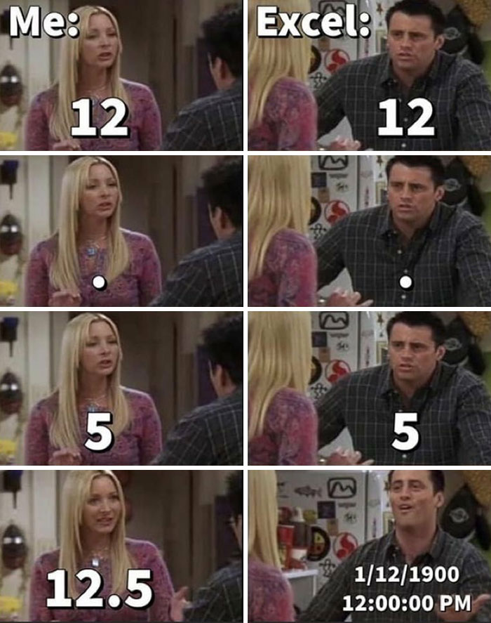
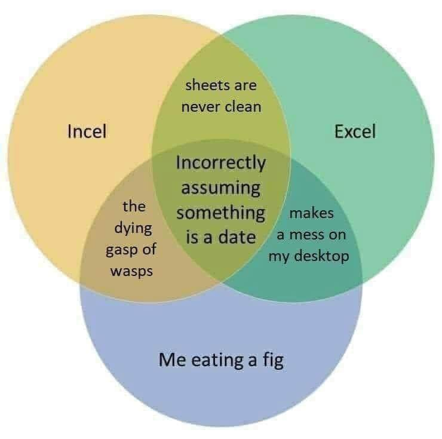

3 Tools
Learn the tools that I – and most people in the lab – employ for workflow and analysis. This facilitates collaboration and provides a natural avenue for assistance when you inevitably encounter a problem. It is very difficult for me to help with technical problems when you are using tools different from those that I use for the same problem.
3.1 Statistics, Visualization, and Scientific Computing
R is the general-purpose tool of choice for statistical analysis, numerical modeling, mapping, and social network analysis. R is state-of-the-art in statistical computing. It is what many (most?) research statisticians use in their work. It’s free. That, by itself, is almost enough. There is no complicated licensing. It fits in with open-science principles, allowing broad (and equitable) dissemination of research methodologies and results, etc. R also has remarkable online help lists, tutorials, etc.
Social network analysis is an important component of the research of many members of the HEEH group. R tools such as statnet and igraph provide powerful open-source solutions to visualization and analysis of networks.
While R remains central to most work, we are increasingly using Julia for scientific-computing applications, particularly agent-based models. The Agents.jl library is a key tool that greatly facilitates the construction of ABMs in Julia.
As we pursue various projects in SciML, Julia becomes even more important, since all the development in this area (so far, at least) is based in Julia.
I do sometimes use Mathematica, which is definitely not open-source software and is therefore at odds with that open-science principle. A Mathematica license is free to Stanford students and faculty and there is a free reader that allows others to view your work, even if they don’t have a full license to use the software.
3.2 Data Management
Don’t use Excel. There are so many nightmare stories about Excel in science. For example, approximately one in five papers in genetics contain errors attributable to Excel auto-correcting (Ziemann, Eren, and El-Osta 2016). I have a couple nightmare stories of my own.

Use database software, such as MySQL, for managing scientific data. Once again, it’s free and supports open-science principles.
There are certainly times in science when you need to use a spreadsheet. For example, if you’re planning a career of science in the academy, you’re probably going to need to produce a lot of budgets for grant proposals. Google sheets does not have the same auto-correct problems. LibreOffice is an excellent open alternative to the Microsoft Office suite. Its spreadsheets also do not have the everything-is-a-date glitch that Excel seems to think is a feature. You will probably still struggle with dropped leading zeros in things like identification numbers and other data codes. It’s maddening.

3.3 Document Preparation
If you write a paper that has even a single equation in it, it is probably worthwhile using LaTeX.
In 1984, Stanford’s own Donald Knuth introduced the concept of literate programming. The goal of literate programming was to transform the communication of code from something dictated by the computer to something more easily understood by human users. A big problem with technical manuals or methodological supplements to scientific papers is when the code does not run as described in the natural-language text. Literate programming addresses this problem by linking the creation of natural-language explanations of the code with the actual execution of that code. RMarkdown provides an excellent framework for literate programming in R.
This lab manual is written in Quarto, which is similar to RMarkdown. The most important difference between Quarto and RMarkdown is that Quarto is not limited to R or the RStudio IDE. With Quarto, you can produce literate-programming documents for R, Julia, or Python and you can do so using whatever text editor you prefer.
In general, learning markdown is a useful and highly-portable skill. Markdown is a lightweight markup language that was originally designed for generating html documents in a text editor that was easier to read and write than full-on html markup (hence the cheeky name markdown). It has since become much more broadly used. An increasing number of applications use markdown for formatting text. For example I use Obsidian for taking and organizing notes. Obsidian uses markdown to to format its notes. Github Readme files are also written in markdown. Discord, StackExchange, Reddit. Most blogging platforms have markdown plugins. Even Slack has some limited markdown capability.
Working in interdisciplinary teams can make your choice of document-preparation software tricky and sometimes even fraught. Markdown actually provides a useful approach to harmonizing, at least somewhat. Make sure you have pandoc installed on your computer and take some time to learn how to use it! Pandoc means that you can write your technical bits in LaTeX or RMarkdown and then convert it to the word document that you know your collaborators are going to insist on using.
3.3.1 Text Editor
You need to have a text editor. I will not wade into the editor wars because they’re silly. I use Emacs. More people probably use Vim. I honestly don’t care what editor you use, but you need to learn to use a plain-text editor of some sort.

3.4 Version Control
If you’re not familiar with the concept of version control, you should become so. The best current tool for version control is git. There is a lab group repository on GitHub, where most of our projects reside in both private and public repositories. You should definitely get yourself a GitHub account.
3.5 Miscellaneous
If you’re using a Mac, you need to have Homebrew installed. Homebrew is the “missing package manager” for MacOS. It greatly simplifies installing many important applications from the unix world.
The Missing Semester course from MIT Computer Science is very handy. These are skills that are generally not taught in classes and can help you enormously.
Kieran Healy has a very nice Guide to Plain-Text Social Science. Like me, Kieran uses Emacs as his preferred editor. Make of that what you will.
3.6 On Proscription
I am generally not comfortable with being prescriptive or proscriptive about how to do science. Broadly, I am sympathetic to Feyeraband’s suggestion that “Science is an essentially anarchistic enterprise: theoretical anarchism is more humanitarian and more likely to encourage progress than its law-and-order alternatives.”
That said, if you are a student who wants my input, it is individually rational for you to use the same tools that I use! There’s actually (usually) a good reason to use them.